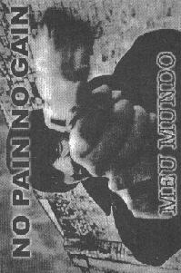

NO PAIN NO GAIN
- 9 músicas (16 min) -
|
|

|
| 1. polícia, política, podre |
2:40 |
| 2. meu mundo |
1:26 |
| 3. missão impossível |
2:03 |
| 4. sou pm |
1:24 |
| 5. não |
1:34 |
| 6. corredor da morte |
2:16 |
| 7. sociedade conservadora |
1:56 |
| 8. reclame com razão |
2:13 |
| 9. sem dor, sem lucro |
0:43 |
|
características:
| qualidade de gravação |
adesivo |
letras das músicas |
|
excelente
|
não
|
sim
|
| cidade : |
taquaritinga - SP - Brasil |
| 1º ensaio : |
ago95 |
| gravação : |
jun98 |
| cantam em : |
português |
| influências : |
do blues ao death |
|
| integrantes: |
baixo |
- |
paulo |
| |
batera |
- |
pablo |
| |
guitarra |
- |
iran |
| |
vocal |
- |
felipe |
|
comentários:
"
sonzeira pesada e um vocal em português gritado, muito gritado,
animal mesmo. a qualidade da gravação da demo está muito boa e as
letras são todas de protesto. fita boa para ouvir quando se está
precisando extravasar sentimentos negativos. e como bem definiu o
guitarrista iran, esta fita é "um protesto de peso à violência e à
política inadequada.
"